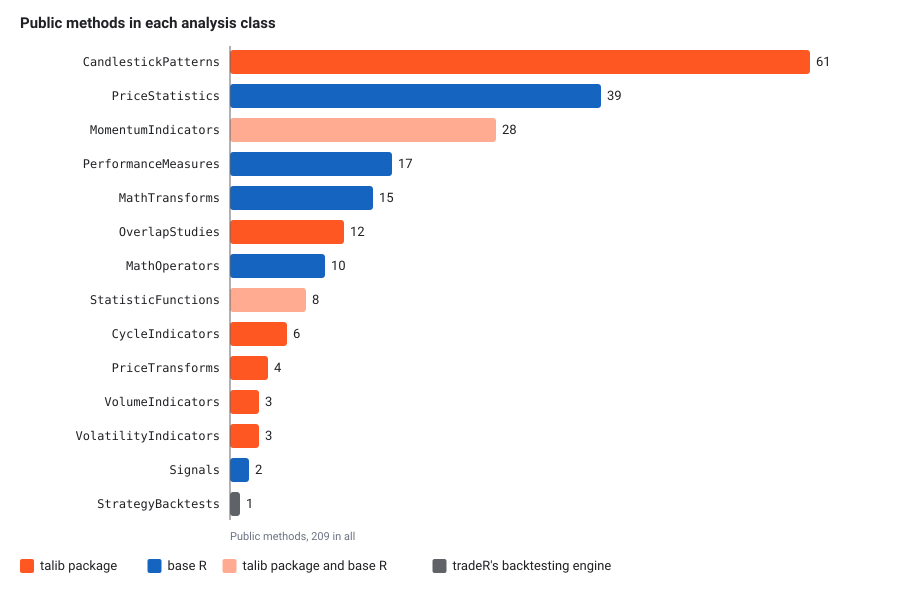

Every instrument object can analyse its own price history. A share,
an index or a commodity future has 209 analysis methods: moving
averages, oscillators, candlestick pattern detectors, summary
statistics, crossover signals, a backtest runner and performance
measures such as the Sharpe ratio. You call one on the instrument, such
as
reliance$relative_strength_index(window = 14, days = 90),
and it fetches the candles from UBI, runs the calculation and hands back
the candles with the result added as a new column.
The methods are not written on Instrument itself. They
live in fourteen small R6 classes, one per group of related
calculations, in the files R/assets_analysis_*.R. Because
an R6 class can have only one parent, the fourteen form one chain, each
inheriting the one before it, from PriceAnalysis at the
root to PerformanceMeasures at the end, and
Instrument inherits the last link, so it has every method
in the chain. Most of the calculations come from TA-Lib, a widely used C library of
technical indicators, through the R talib package, and
follow its function groups; the statistics, the signals, the backtest
and the performance measures are this package’s own. Every asset basket inherits the same
chain, because AssetBasket inherits
PerformanceMeasures too and supplies prices()
of its own.
How a method works
Every analysis method that works on candles follows the same four
steps, which the sequence diagram below traces for
relative_strength_index().
sequenceDiagram
autonumber
participant Y as Your code
participant M as relative_strength_index
participant P as prices()
participant U as UBI
participant T as talib package
Y->>M: window = 14, days = 90
M->>P: interval, from_date, to_date, days, adjusted
P->>U: GET /api/instruments/prices
U-->>P: candles, or none
P-->>M: data frame, or NULL
alt no candles
M-->>Y: NULL
else candles
M->>T: talib::RSI(close, timePeriod = 14)
T-->>M: one value per candle
M-->>Y: the candles with an rsi_14 column added
end
Three things follow from this design, and each is worth knowing before you call the methods in a loop.
- Each call fetches its own candles. Two indicators on the same instrument send two requests. That is deliberate: UBI runs on the same machine and keeps its own copy of the candles in Redis, so a repeated request is cheap, and the package keeps no cache of its own.
-
No candles means
NULL, not an error. When UBI has no candles for the range,prices()returnsNULL, and so does every method built on it. That is what happens for every instrument in a family UBI stores no candles for, as the table below shows. -
The early rows are empty. An indicator needs a run
of candles before it has a value, so the first rows of its column are
NA. A 14-candle RSI has nothing for its first 14 rows, and the Hilbert transform indicators need 32 to 63 candles before their first value. Ask for a longer range than the window you want to look at.
The common arguments
Every method that fetches candles takes the same five arguments as prices(),
after its own. The table below lists them. Give either
days, or from_date and to_date,
but not both.
| Name | Type | Default | Description |
|---|---|---|---|
interval |
character | "day" |
The candle length, such as "day" or
"5minute"
|
from_date |
Date or character |
NULL |
The first day of the range, as a date or
"YYYY-MM-DD"
|
to_date |
Date or character |
NULL |
The last day of the range |
days |
integer | NULL |
The number of days to count back from today |
adjusted |
logical | TRUE |
Whether prices are adjusted for splits and bonuses, for the segments UBI adjusts |
Each method’s own arguments use the package’s spelled-out names
rather than TA-Lib’s. The window length is window, not
TA-Lib’s timeperiod or the talib package’s
timePeriod, and not period, and the candle
column to work on is column, which defaults to
"close".
The window argument is window.
Passing a name the method does not have fails in R before any request
is sent. For reliance$simple_moving_average(period = 5), R
stops with the error unused argument (period = 5).
The correct call is
reliance$simple_moving_average(window = 5, days = 90).
The fourteen classes
The table below lists the fourteen analysis classes in the order of
the chain, from the one just after PriceAnalysis to the one
Instrument inherits, with the number of public methods in
each. The counts add up to 209, the same as in the Python library. The
thirteen older classes add up to 192, and
PerformanceMeasures was added to the Python library as the
fourteenth on 2026-09-28.
| Class | File | Methods | What it holds | Each method returns | Article |
|---|---|---|---|---|---|
PriceStatistics |
R/assets_analysis_price_statistics.R |
39 | Highs, lows, means, spreads and quantiles of prices, volumes and returns | A number, a summary, a histogram or a narrowed data frame | Statistics |
OverlapStudies |
R/assets_analysis_overlap_studies.R |
12 | Moving averages, Bollinger bands, parabolic SAR | The candles with columns added | Indicators |
MomentumIndicators |
R/assets_analysis_momentum_indicators.R |
28 | MACD, RSI, ADX, stochastics and other oscillators | The candles with columns added | Indicators |
VolumeIndicators |
R/assets_analysis_volume_indicators.R |
3 | Chaikin accumulation distribution, on balance volume | The candles with a column added | Indicators |
CycleIndicators |
R/assets_analysis_cycle_indicators.R |
6 | The Hilbert transform family | The candles with columns added | Indicators |
PriceTransforms |
R/assets_analysis_price_transforms.R |
4 | Average, median and typical price, weighted close | The candles with a column added | Statistics |
VolatilityIndicators |
R/assets_analysis_volatility_indicators.R |
3 | True range and average true range | The candles with a column added | Indicators |
StatisticFunctions |
R/assets_analysis_statistic_functions.R |
8 | Beta, correlation, linear regression, standard deviation | The candles with columns added | Statistics |
MathTransforms |
R/assets_analysis_math_transforms.R |
15 | Trigonometric, logarithmic and rounding functions | The candles with a column added | Statistics |
MathOperators |
R/assets_analysis_math_operators.R |
10 | Adding, dividing, rolling highs and lows | The candles with columns added | Statistics |
CandlestickPatterns |
R/assets_analysis_candlestick_patterns.R |
61 | TA-Lib’s candlestick pattern recognisers | The candles with a column of 100, -100 or 0 | Patterns |
Signals |
R/assets_analysis_signals.R |
2 | Crossovers and crossunders between two columns | A copy of your data frame with a logical column | Signals and backtests |
StrategyBacktests |
R/assets_analysis_strategy_backtests.R |
1 | A backtest of a strategy built on BacktestStrategy
|
A named list of statistics | Signals and backtests |
PerformanceMeasures |
R/assets_analysis_performance_measures.R |
17 | Returns, volatility, Sharpe, Sortino and Calmar ratios, drawdowns, value at risk and measures against a benchmark | A number, a data frame of drawdowns or a named list summary | Performance measures |
The chain starts at a small base class, PriceAnalysis,
which declares prices() and signals an error from it, the R
stand-in for Python’s NotImplementedError. That lets each
analysis file be written and read on its own, without the instrument
classes. Instrument and AssetBasket supply the
real prices(), which reads UBI.
The chart below shows the same counts, coloured by what calculates
each class’s methods in R. Candlestick patterns and price statistics
make up almost half of the total. The math transforms and math operators
are written in base R because the talib package lacks most
of them, and MomentumIndicators and
StatisticFunctions mix the two, as Indicators and Statistics and transforms
explain.

Which instruments have candles
An analysis method can only work where UBI stores candles, and it stores them for a minority of segments. The table below lists what is known, family by family. Asset classes has the full matrix.
| Family | Classes with candles | Classes without |
|---|---|---|
| Equities |
Equity (adjusted, with price_factor),
EquityIndex
|
The four derivative classes have not been checked |
| Fixed income | none | all six |
| Commodities | the four derivative classes |
Commodity, CommodityIndex
|
| Currencies | none | all six |
| Funds and trusts |
ExchangeTradedFund (adjusted, with
price_factor) |
InvestmentTrust |
| Mutual funds | none | MutualFund |
UBI’s daily job loads only day candles. Intraday
intervals such as 5minute are loaded into UBI by hand, so
an intraday call usually returns NULL unless someone has
loaded that instrument; on 2026-09-26, the Python library’s
prices(interval="5minute", days=1) on RELIANCE returned
nothing. UBI’s page on price
history explains what is loaded and from which broker.
A first example
The example below adds a 20-day simple moving average to RELIANCE’s candles and marks the days its close crossed above it. It was not run for this article, because it needs a live UBI; the calls are taken from the method signatures.
reliance <- Equity$new(exchange = "nse", symbol = "RELIANCE")
frame <- reliance$simple_moving_average(window = 20, days = 365)
crossings <- reliance$is_cross_over(frame, "close", "sma_20")
columns <- c(
"datetime",
"close",
"sma_20"
)
print(crossings[crossings$cross_over, columns])The first call returns the candles with an sma_20
column. The second marks, in a new cross_over column, each
row where the close was at or below the average on the previous row and
above it on this one.
The articles in this section
Each article lists every method in its groups, with the method’s own arguments and the column it adds. The list below says what each one covers.
- Indicators covers overlap studies, momentum, volume, volatility and cycle indicators, 52 methods.
- Candlestick patterns covers the 61 pattern recognisers and what their 100, -100 and 0 values mean.
- Statistics and transforms covers price statistics, statistic functions, math operators and transforms, and price transforms, 76 methods.
- Signals and backtests covers crossover detection and running a strategy over an instrument’s candles with the package’s backtesting engine.
- Performance measures covers returns, risk, drawdowns and comparison with a benchmark, 17 methods.